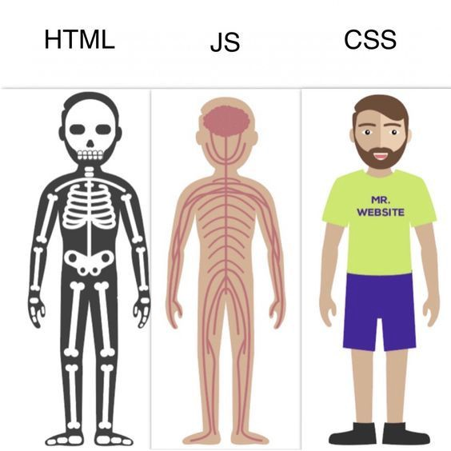

Website elements
Document Object Model (DOM)

"The Document Object Model (DOM) connects web pages to scripts or programming languages by representing the structure of a document—such as the HTML representing a web page—in memory. Usually it refers to JavaScript ... The DOM represents a document with a logical tree ... DOM methods allow programmatic access to the tree. With them, you can change the document's structure, style, or content."
CSS Object Model (CSSOM)
"The CSS Object Model is a set of APIs allowing the manipulation of CSS from JavaScript. It is much like the DOM, but for the CSS rather than the HTML. It allows users to read and modify CSS style dynamically."
Render tree
"Once we have all CSSOM and DOM already loaded, we will generate with the Render tree with the only visible nodes related. For instance, the nodes which contain display:none they will not be part of Render Tree."
Sources: